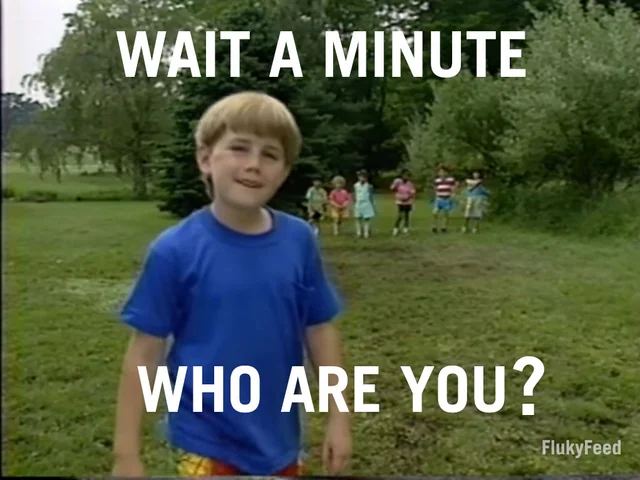
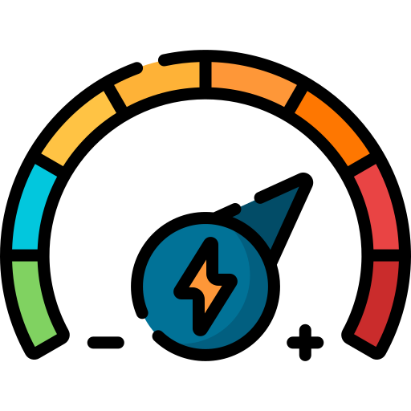
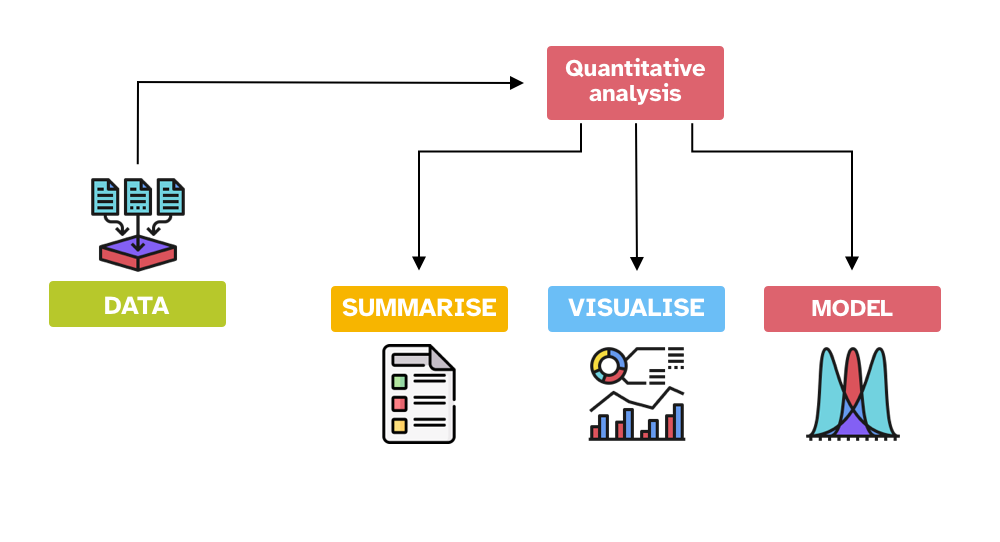
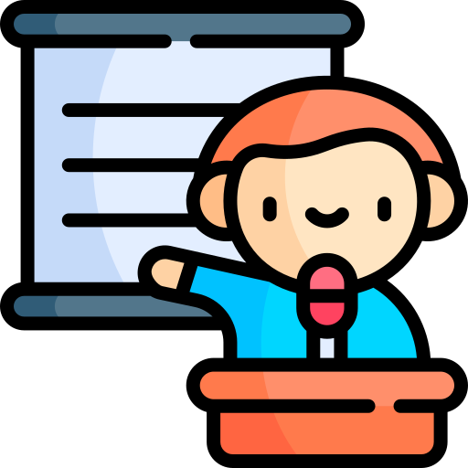
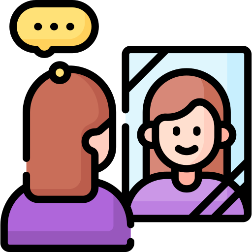
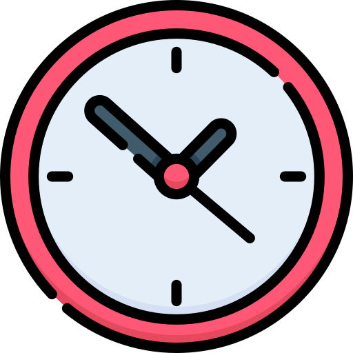

QML - Week 1
Onboarding
1 Welcome to QML!
2 Who am I?
3 Who are you?

4 The approach of the course

knowledge-oriented research

practice-intensive course
5 What will you learn?

6 How will we do statistics?
programming language
IDE
7 The journey
| Week | Topic |
|---|---|
| 2-3 | R/RStudio Basics + Data summaries |
| 4 | Plotting data |
| 5 | Introduction to statistical modelling |
| 6-10 | Regression modelling |
8 Where to find everything
. . .
See the Content page for a week-by-week breakdown.
. . .
Also see Learn.
9 How the course works

LECTURES
Week 1-10
Week’s readings due!

WORKSHOPS
Week 2-10
10 How you will be assessed
TipFormative assessments

4 Self-reflections

2 Quizzes
. . .
Detailed information on assessment can be found here: https://uoelel.github.io/qml/assessments.html
11 What has changed this year?
12 Where to find help

book office hours
[link also on the course homepage]
Piazza Q&A forum
[access via Learn]